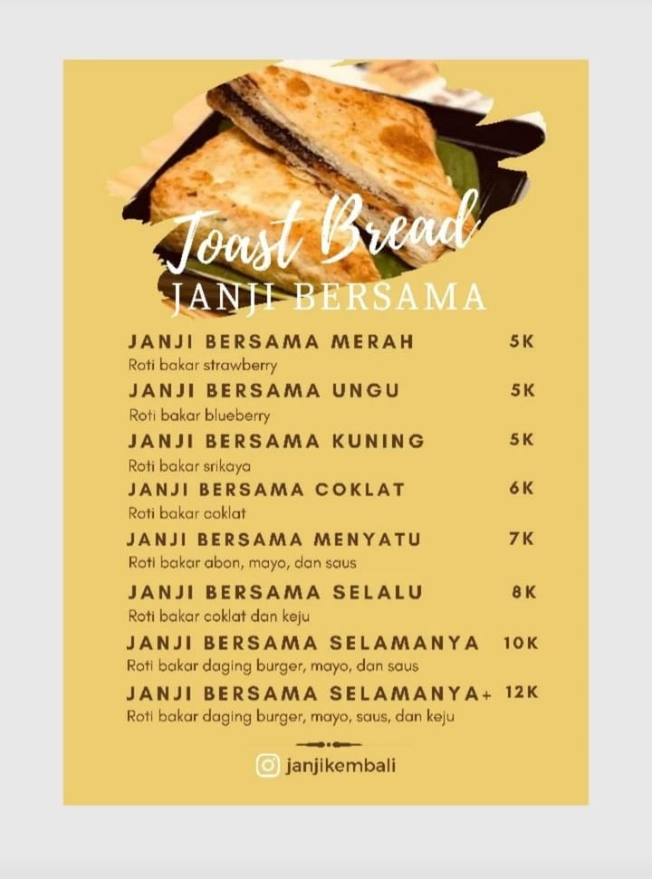
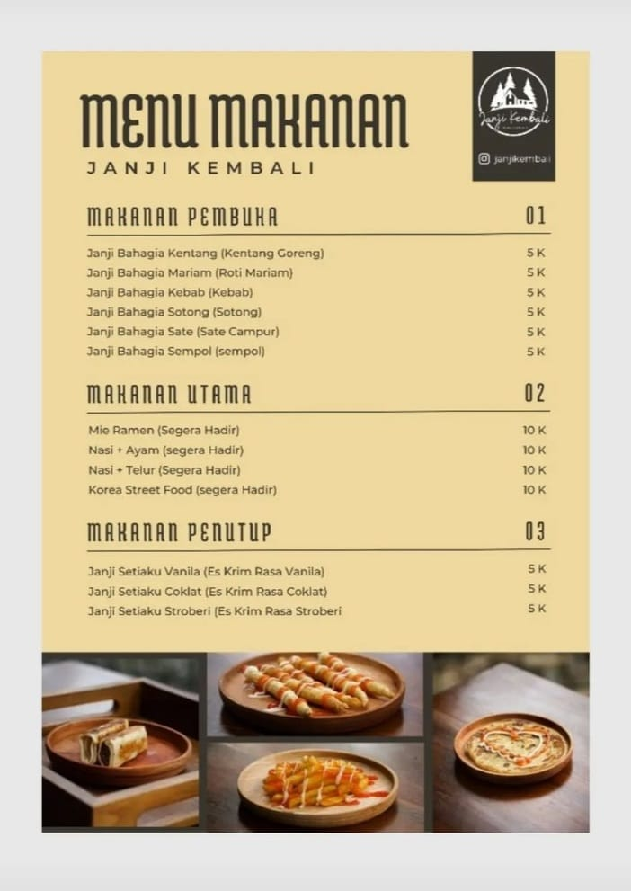
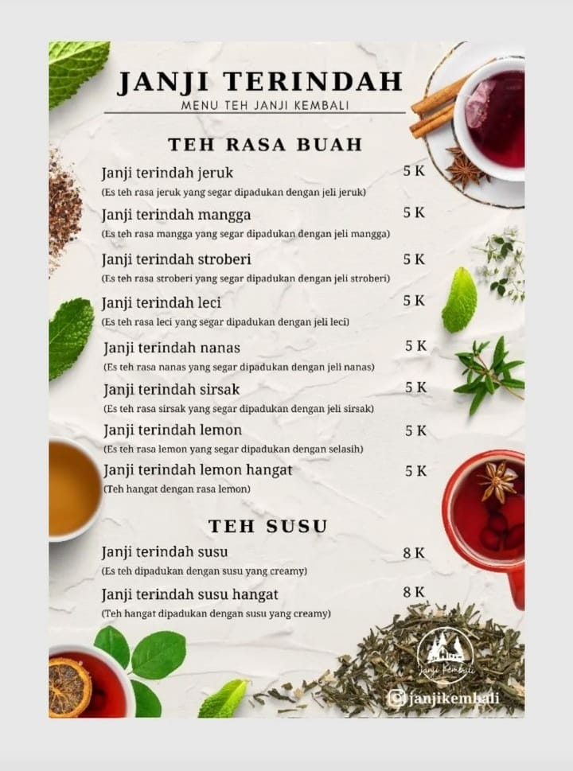

jajanan khas Malang, terbuat dari ayam, tepung tapioka, dan bumbu-bumbu. Gurih, renyah, dan nikmat.
roti pipih berlapis yang populer di Asia Tenggara. Gurih, renyah, dan bisa dinikmati dengan berbagai topping.
hidangan sate yang terdiri dari berbagai macam jenis daging dan jeroan. Gurih, lezat, dan bergizi.
hidangan daging panggang yang ditusuk dengan tusukan besi. Gurih, lezat, dan populer di berbagai belahan dunia.
Makanan laut yang gurih dan renyah, populer di berbagai masakan Asia Tenggara. Sering diolah menjadi berbagai hidangan lezat, seperti sotong goreng, sotong bakar, dan sotong tumis.
camilan gurih dan asin yang cukup populer di Indonesia. Terbuat dari kentang yang masih segar dan fresh dicocol dengan saos yang pedas.
Minuman bersoda berwarna merah dan putih dengan es krim di atasnya. Yang memiliki rasa manis, asam, gurih, dan creamy. Cocok untuk cuaca panas atau pencuci mulut.
Minuman Segar Dengan Perpaduan Rasa Asam Dan Manis, Melambangkan Cinta Yang Penuh Lika-Liku, Namun Tetap Manis.
Minuman Janji Biru terbuat dari campuran teh hijau, susu, dan gula. Teh hijau memberikan rasa yang menyegarkan dan sedikit pahit, susu memberikan rasa yang gurih dan creamy, dan gula memberikan rasa yang manis.
Rasa Kopi Yang Pekat Dan Manis, Seperti Janji Yang Selalu Dipegang Teguh. Minuman Janji Mocca memiliki rasa manis dan creamy yang berasal dari susu dan bubuk mocca. Rasa manis ini kemudian diseimbangkan dengan rasa pahit yang khas dari kopi. Rasanya unik dan tidak terlalu manis, sehingga cocok untuk dinikmati oleh semua kalangan.
Minuman tradisional khas Indonesia yang terbuat dari tetesan tepung beras hijau, santan, dan sirop gula aren. Cendol memiliki rasa yang manis dan gurih, dengan tekstur yang kenyal dan lembut.
minuman yang terbuat dari campuran kopi dan susu. Kopi susu memiliki rasa manis dan gurih, dengan tekstur yang creamy. Minuman ini cocok untuk dinikmati kapan saja, baik di pagi hari, siang hari, maupun malam hari.
Minuman Janji Sukacita memiliki rasa manis dan segar yang berasal dari susu dan sirup stroberi. Rasa manis ini kemudian diseimbangkan dengan sedikit rasa asam dari stroberi. Rasanya unik dan tidak terlalu manis, sehingga cocok untuk dinikmati oleh semua kalangan.
Minuman Janji Mocca Manis memiliki rasa manis dan creamy yang berasal dari susu, gula dan bubuk mocca. Rasa manis ini kemudian diseimbangkan dengan rasa pahit yang khas dari kopi. Rasanya unik dan tidak terlalu manis, sehingga cocok untuk dinikmati oleh semua kalangan.